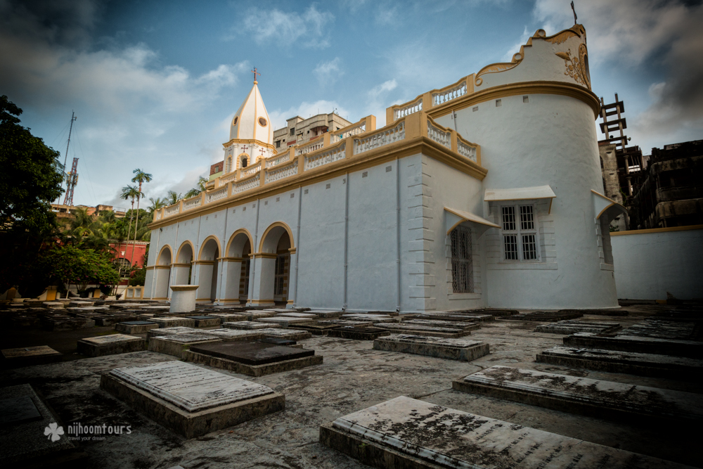
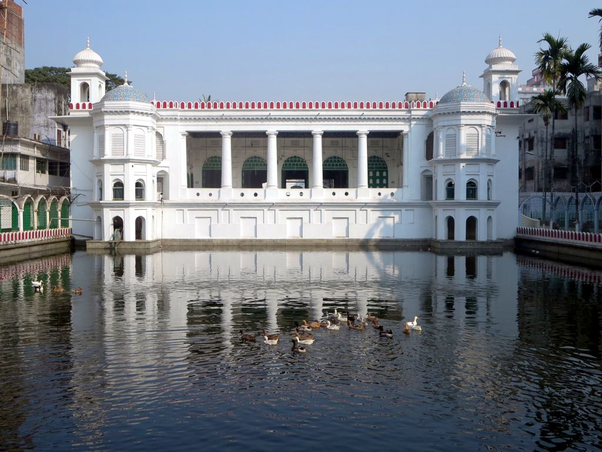

Baitul Mukarram, also spelled as Baytul Mukarrom (Arabic: بيت المكرّم; Bengali: বায়তুল মোকাররম; The Holy House) is the National Mosque of Bangladesh. Located at the center of Dhaka, capital of Bangladesh, the mosque was completed in 1968. It has a capacity of 40,000...
Read moreHISTORICAL PLACES IN DHAKA

Star Mosque (Bengali: তারা মসজিদ; also known as Tara Masjid), is a mosque located in Armanitola area, Dhaka, Bangladesh. The mosque has ornate designs and is decorated with motifs of blue stars. It was built in the first half of the 19th century by Mirza Golam Pir (Mirza Ahmed Jan)...
Read more

Dhakeshwari National Temple (Bengali: ঢাকেশ্বরী জাতীয় মন্দির, romanized: Ðhakeshshori Jatio Mondir) is a Hindu temple in Dhaka, Bangladesh. It is state-owned, giving it the distinction of being Bangladesh's 'National Temple'. The name "Dhakeshwari" (ঢাকেশ্বরী Ðhakeshshori) means so called "Goddess of Dhaka". Since the destruction of Ramna Kali Mandir in 1971 by the Pakistan Army during the Bangladesh Liberation War, the Dhakeshwari Temple has assumed status as the most important Hindu place of worship in Bangladesh...
Read more

The Hussaini Dalan (Bengali: হোসেনী দালান) was originally built during the later half of the Mughal rule (17th century) in Dhaka.[1] It was built as the Imambara or house of the Imam (religious leader) of the Shia Muslim community. Hussaini Dalan serves as the main Hussainiya of Dhaka, or venue for majlis or gatherings held during the month of Muharram, tenth day religious gathering commemorates the martyrdom of Hussain, the grandson of the Islamic prophet Muhammad...
Read more